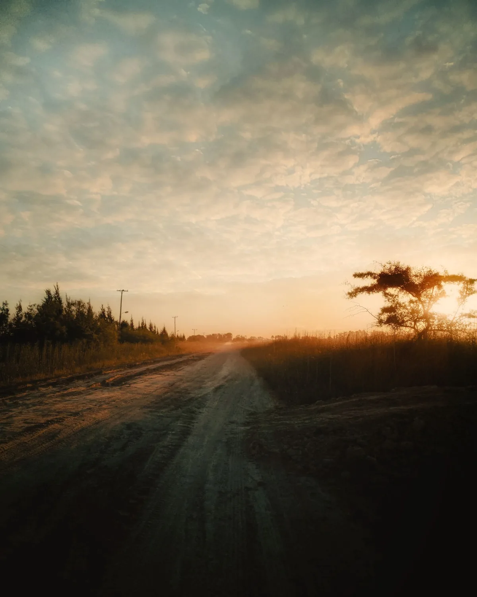
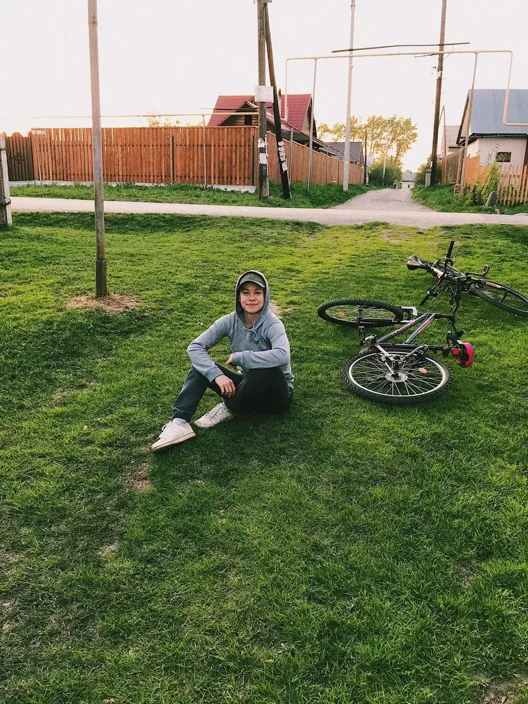

Entre casa y pueblo
Entre casa y pueblo

Fat e-bikes de alta potencia para el campo, el pueblo y todo lo que hay en el medio.
Elegí tu recorrido
Motor con torque real para la tierra, las subidas y la carga. Sin pedalear un metro si no querés.


Batería de litio extraíble. La cargás en la casa o en el galpón por menos de $200 la carga completa.
Entre casa y pueblo
 Jornadas largas
Jornadas largas
 Campo y caminos
Campo y caminos
 Pendientes y carga
Pendientes y carga